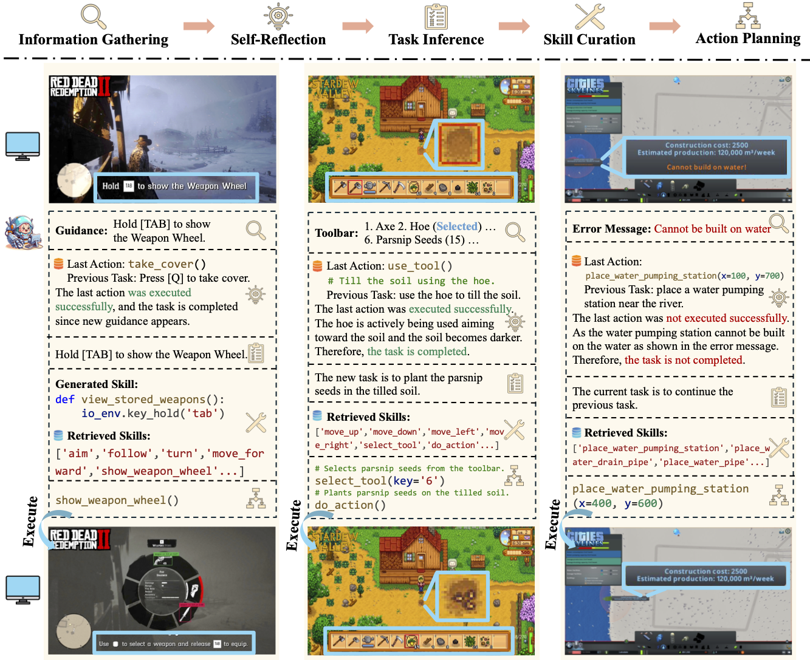
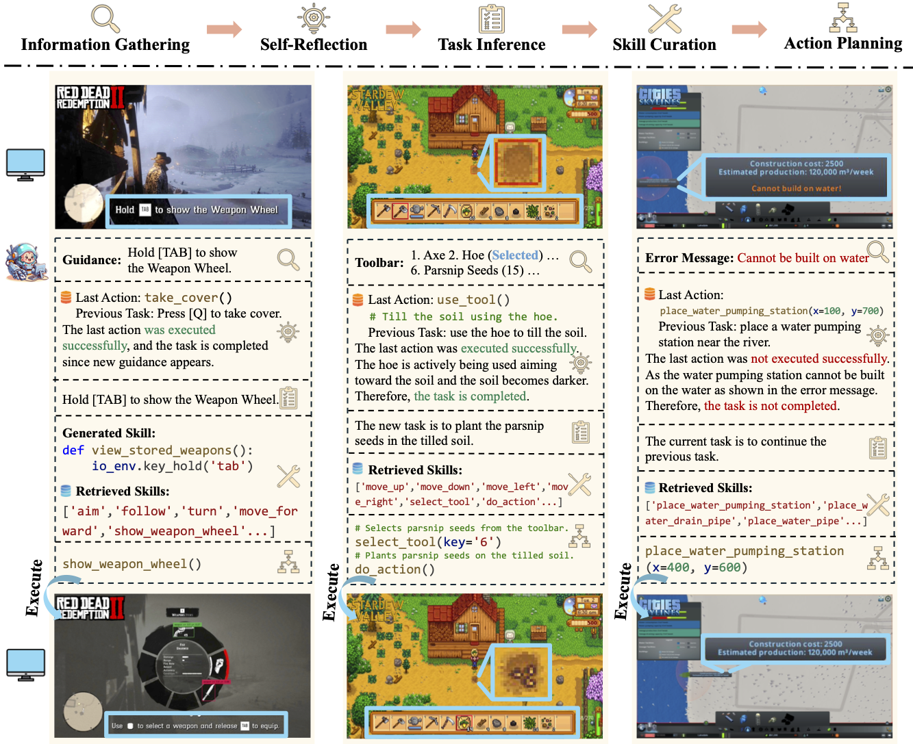

Despite their success in specific scenarios, existing foundation agents still struggle to generalize across various virtual scenarios, mainly due to the dramatically different encapsulations of environments with manually designed observation and action spaces. To handle this issue, we propose the General Computer Control (GCC) setting to restrict foundation agents to interact with software through the most unified and standardized interface, i.e. using screenshots as input and keyboard and mouse actions as output. We introduce Cradle, a modular and flexible LMM-powered framework, as a preliminary attempt towards GCC. Enhanced by six key modules, Information Gathering, Self-Reflection, Task Inference, Skill Curation, Action Planning, and Memory, Cradle is able to understand input screenshots and output executable code for low-level keyboard and mouse control after high-level planning and information retrieval, so that Cradle can interact with any software and complete long-horizon complex tasks without relying on any built-in APIs. To target GCC, we propose Cradle, an agent framework with strong reasoning abilities, including self-reflection, task inference, Experimental results show that Cradle exhibits remarkable generalizability and impressive performance across four commercial never before explorer digital games, five software applications, and a comprehensive benchmark, OSWorld. To our best knowledge, Cradle is the first to enable foundation agents to follow the main storyline and complete 40-minute-long real missions in the complex AAA game Red Dead Redemption 2 (RDR2). Cradle can also create a city of a thousand people in Cities:~Skylines, farm and harvest parsnips in Stardew Valley, and trade and bargain with a maximal weekly total profit of 87% in Dealer's Life 2. Cradle can not only operate daily software, like Chrome, Outlook, and Feishu, but also edit images and videos using Meitu and CapCut. With a unified interface to interact with any software, Cradle greatly extends the reach of foundation agents by enabling the easy conversion of any software, especially complex games, into benchmarks to evaluate agents' various abilities and facilitate further data collection, thus paving the way for generalist agents.

Computers, as the most important and universal interface in an increasingly digital world, provide countless rich software, including applications and realistic digital games for agents to interact with, while avoiding the challenges of robots in reality, such as hardware requirements, constraints of practicability, and possible catastrophic failures. Making mastering these various virtual environments a promising path for foundation agents to achieve generalizability. Therefore, we propose the General Computer Control (GCC) setting:
Building foundation agents that can master ANY computer task via the universal human-style interface by receiving input from screen and audio and outputting keyboard and mouse actions.
There are many challenges to achieving GCC: i) good alignment across multi-modalities for better understanding and decision-making; ii) precise control of keyboard and mouse to interact with the computer, which has a large, hybrid action space, including not only which key to press and where to move, but also the duration of the press and the speed of the mouse movement; iii) long-term memory to both store past experiences due to the partial observability of GCC tasks and allow reasoning ability over them for reuse of knowledge to solve novel tasks; and iv) efficient exploration in a structured manner to discover better strategies and solutions autonomously, i.e. self-improving, which can allow agents to generalize across the myriad tasks in the digital world.

To pursue GCC, we propose Cradle, illustrated in the Figure, a modular and flexible LMM-powered framework that can properly handle the challenges GCC presents. The framework should have the ability to understand and interpret computer screens and dynamic changes between consecutive frames from arbitrary software and be able to generate reasonable computer control actions to be executed precisely. This suggests that a multimodal model with powerful vision and reasoning capabilities, in addition to rich knowledge of computer UI and control, is a requirement. In this work, we leverage GPT-4o as the framework's backbone model.
Cradle is composed of six main modules: 1) information gathering to process multimodal input, 2) self-reflection to rethink past experiences, 3) task inference for choosing the best next task, 4) skill curation for generating and updating relevant skills for a given task, 5) action planning for deciding on specific actions for keyboard and mouse control, and 6) memory for storage and retrieval of past experiences and known skills.
 

Cradle can achieve a 100% success rate in simple tasks like following an NPC or going to specific locations (e.g., Follow Dutch and Go to Barn). GPT-4o struggles with real-time combat tasks and searching for small objects due to its inability to accurately locate enemies or objects and precisely time decisions. Even equipped with additional detection tools, like Grounding DINO (Liu et al., 2023), the success rate drops significantly to 20% in the task of Protect Dutch, which requires nighttime combat. Additionally, indoor tasks like Search for Supplies and Search Barn are also challenging due to GPT-4o's poor spatial perception, which finds it difficult to locate target objects and ends up circling aimlessly.
Multiple tasks remain challenging. Even with a well-known GUI, like Chrome and Outlook, GPT-4o still cannot recognize specific UI items to interact with and also struggles with visual context. For example, it may forget to press the Save button in an open dialog, or not distinguish between a nearby enabled button versus a distant and disabled one (e.g., when posting on Twitter). The phenomenon is more severe in UIs with non-standard layouts, like CapCut, Meitu, and Feishu. Lacking prior knowledge, GPT-4o fails in task inference and selecting the correct skills.

Cradle achieves the overall highest success rate in OSWorld, compared to the baselines, at 7.81% without relying on internal APIs to provide extra grounding labels, Set-of-Mark (SoM). Cradle's information gathering module improves grounding for more precise action execution, increasing its success rate. The self-reflection module greatly helps it to correctly predict infeasible tasks and subsequently fix mistakes, as exemplified in the professional domain results, where it achieves a 20.41% success rate, significantly surpassing the baselines.
In this work, we introduce GCC, a general and challenging setting with a unified and standard interface for control of diverse software (via screenshots, and keyboard and mouse operations), paving the way towards general foundation agents across all digital world tasks.
To properly address the challenges GCC presents, we propose a novel open-source framework, Cradle, which exhibits strong performance in reasoning and performing actions to accomplish real missions or tasks in a set of complex digital games and everyday software applications. To the best of our knowledge, Cradle is the first framework that enables foundation agents to succeed in such a diverse set of environments without relying on any built-in APIs. The success of Cradle greatly extends the reach of foundation agents and demonstrates the feasibility of converting any software, especially complex games, into benchmarks to evaluate agents' various abilities and facilitate further data collection.
Although our agent can still face difficulties in certain tasks, Cradle serves as a pioneering work to develop more powerful LMM-based general agents across computer control tasks, combining both further framework enhancements and new advances in LMMs.